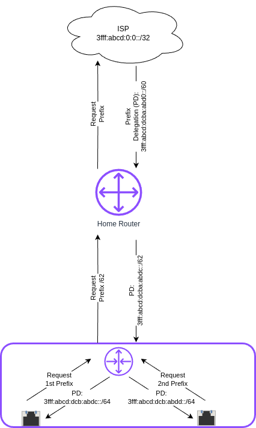
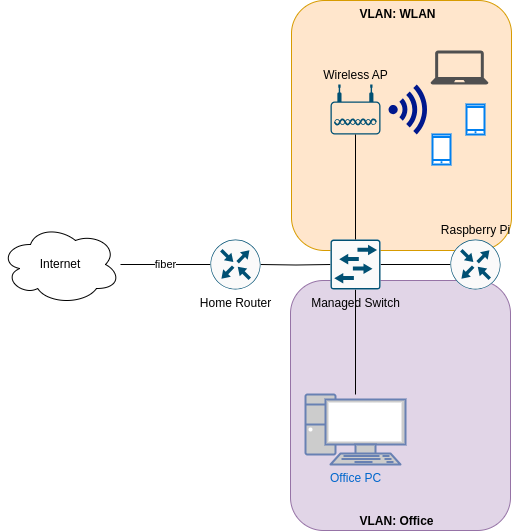
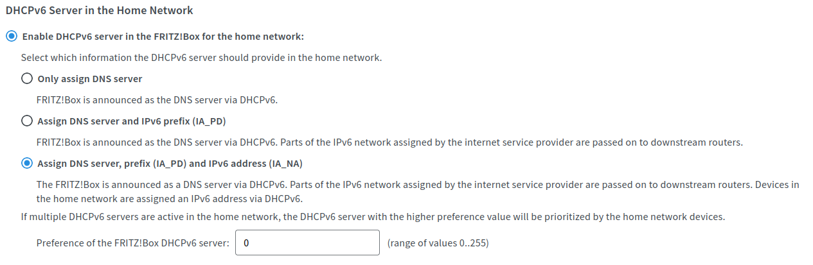

Einleitung
Vor Kurzem hat mir mein ISP (Internetdienstanbieter) endlich modernes IPv6 bereitgestellt. Ich habe zumindest ein /60-Präfix erhalten, was mir erlaubt, Subnetze zu bilden – bis zu 16, da die Netzwerkkennung bei IPv6 64 Bit lang ist. So weit, so gut. Aber ich habe schnell gemerkt, dass sich dieses Präfix häufig ändert, genau wie das IPv4-Präfix. Das ist jedoch ein Problem: Ich habe neben meinem Standardnetz zwei VLANs, die jeweils ein eigenes GUA (Global Unicast Address)-Präfix benötigen. Wann immer sich mein Präfix ändert, müsste ich die VLAN-Konfigurationen und die Routen anpassen. Das ist nicht praktikabel.
Glücklicherweise gibt es eine Lösung für dieses Problem: IPv6-Präfix-Delegation (PD).
Wie funktioniert das?
Mit klassischem DHCP lassen sich automatisch IPv4-Adressen und andere Konfigurationsdaten an Clients verteilen. Mit modernem ICMPv6 geht das natürlich auch. Aber es geht noch besser: Mit PD kann man Geräten ganze Netzpräfixe zuweisen.
Genau so bekommt auch dein Heimrouter das IPv6-Präfix vom ISP: Der Heimrouter fordert über den DHCPv6-Server des ISP ein Präfix an. Der Server antwortet mit einem bestimmten Präfix, das er delegiert. Wenn dein Heimrouter IA_PD unterstützt, kannst du sogar mit einem internen Router (z. B. einem Linux-Rechner) selbst wieder einen Teil dieses Präfixes anfordern und eigene Netze (z. B. VLANs) bedienen – wie in meinem Fall.

Die einzelnen Schnittstellen des nachgeschalteten Routers können nun selbst ein /64/-Netz anfordern und sich eine ~IPv6-Adresse aus diesem Netz zuweisen lassen.
Netzwerkaufbau
So sieht mein aktuelles Netzwerk aus:

Mein Heimrouter bekommt ein /60-IPv6-Präfix, das sich alle paar Tage ändert. An diesen Heimrouter ist ein Managed-Switch angeschlossen, über den ich VLANs einrichten kann. Die Firewall, der DHCP(v6)-Server und der Router für diese VLANs laufen auf einem Raspberry Pi, der als "Router on a stick" fungiert: Er ist über einen Trunk-Port mit dem Switch verbunden und besitzt zwei virtuelle Netzwerkschnitteln für die beiden VLANs – Office (VLAN-ID 10) und WLAN (VLAN-ID 20).
Der WLAN-Access-Point ist über einen Access-Port angeschlossen, der für VLAN 10 konfiguriert ist. Das Office-VLAN enthält bisher nur meinen Desktop-PC.
Konfiguration des Heimrouters
Zuerst musst du herausfinden, ob und wo du auf deinem Heimrouter die Option IAPD (Prefix Delegation) für DHCPv6 aktivieren kannst. Auf meinem Heimrouter (eine Fritz!Box) sieht das Menü folgendermaßen aus und ist unter Heimnetz → Netzwerk → Netzwerkeinstellungen → IPv6-Einstellungen zu finden.

Konfiguration des Raspberry Pi Routers
Als nächstes müssen wir den internen Router konfigurieren. Wie erwähnt, nutze ich einen Raspberry Pi, aber die folgenden Schritte sollten auf den meisten modernen Linux-Distributionen und mit beliebiger PC-Hardware funktionieren. Du könntest eventuell ein leistungsfähigeres Gerät bevorzugen – insbesondere mit mehr Bandbreite.
Ich habe mich zunächst im ubuntuusers Wiki informiert. Danach habe ich mich entschieden, systemd-networkd zur Konfiguration meiner Netzwerkschnittstellen zu verwenden. Ich nutze Raspberry Pi OS, das auf Debian Bookworm basiert. Standardmäßig kommt dort NetworkManager zum Einsatz.
systemd-networkd ist jedoch bereits installiert. Ich habe mich deshalb entschieden, erst alles zu konfigurieren und danach den NetworkManager.service zu deaktivieren und stattdessen systemd-networkd.service zu aktivieren.
WAN-Schnittstelle konfigurieren
Ich beginne mit der physischen Schnittstelle, die als WAN-Schnittstelle dient:
Die ersten Zeilen enthalten allgemeine Einstellungen. Im Abschnitt [Match] musst du den Namen der Schnittstelle angeben, wie sie vom System benannt wurde. Bei mir ist es eth0, auf anderen Systemen könnte es enp0s16f0u1 o. Ä. sein. Außerdem muss der [Typ] der Schnittstelle angegeben werden, hier also ether für kabelgebundene Verbindungen. Für WLAN wäre es wlan. Du kannst auch nach anderen Kriterien matchen, z. B. MACAddress.
/etc/systemd/network/10-eth0.network
[Match] Name=eth0 Type=ether
Als nächstes folgt der Abschnitt [Network], beginnend mit einer Beschreibung. Der Text ist beliebig.
[Network] Description=WAN-Ethernet-Port
Nun zum ersten interessanten Teil: Wir teilen networkd mit, dass es DHCPv6 nutzen soll, um eine IPv6-Adresse zu beziehen, und dass es Router Advertisements (RAs) akzeptieren soll. Außerdem soll IP-Forwarding aktiviert sein.
DHCP=ipv6 IPv6AcceptRA=yes IPForward=yes
Hier geben wir auch an, welche VLANs mit dieser Schnittstelle verknüpft werden:
VLAN=Office VLAN=WLAN
Da in der Regel ein Dual-Stack-Betrieb sinnvoll ist, setzen wir eine statische IPv4-Adresse passend zum lokalen Netz:
[Address] Address=192.168.178.254 Gateway=192.168.178.1
Die IPv4-Default-Route darf nicht fehlen. Für IPv6 ist das nicht nötig – das übernimmt der DHCPv6-Client.
[Route] Gateway=192.168.178.1
Nun zum wichtigsten Teil: IA_PD aktivieren:
- PrefixDelegationHint:
- Die gewünschte Präfixgröße – sie muss größer als das Präfix, dass dein ISP dir liefert (bei mir
/60/), aber höchstens/64sein. Ich habe mich für/62entschieden, was vier Subnetze erlaubt.1 - UseDelegatedPrefix:
- Aktiviert die Nutzung der Prefix Delegation.
- UseAddress:
- Optional – unterdrückt Warnungen, dass Adressen nicht verwendet werden.
[DHCPv6] PrefixDelegationHint=::/62 UseDelegatedPrefix=yes UseAddress=no
VLAN-Geräte konfigurieren
Im nächsten Schritt richten wir die virtuellen Geräte für die VLANs ein. Dafür muss jeweils eine Datei vom Typ .netdev unter /etc/systemd/network/ angelegt werden. Diese Dateien sollten mit 00- beginnen, damit sie vor der Konfiguration der physischen Schnittstelle verarbeitet werden.
Jede Datei enthält zwei Abschnitte:
- [NetDev]:
- Hier wird das virtuelle Gerät mit
NameundKind=vlandefiniert. - [VLAN]:
- Hier wird die
VLAN-Idfestgelegt (zwischen 1 und 4096), passend zur Konfiguration auf dem Switch.
[NetDev] Name=Office Kind=vlan [VLAN] Id=10
Für jedes VLAN brauchen wir zusätzlich eine passende .network-Datei. Diese sollte mit einer höheren Nummer (z. B. 20-) beginnen als die der physischen Schnittstelle.
Im Abschnitt [Match] geben wir den Namen des VLAN-Geräts an. Der Typ ist vlan.
[Match] Name=Office Type=vlan
Im Abschnitt [Network] erfolgt die eigentliche Netzwerkkonfiguration:
- DHCP=ipv6:
- Aktiviert
DHCPv6. - IPForward:
- Weiterleitung aktivieren.
- IPv6SendRA:
- Router Advertisements (
RAs) senden. - IPv6AcceptRA:
- Empfang von
RAs(hier meist auf „no“). - DHCPPrefixDelegation:
- Aktiviert
IA_PD.
[Network] Description=Office VLAN Interface DHCP=ipv6 IPForward=yes IPv6SendRA=yes IPv6AcceptRA=no DHCPPrefixDelegation=yes
Auch eine IPv4-Adresse sollte für Dual-Stack vergeben werden:
[Address] Address=172.16.10.1/24
Der Abschnitt [IPv6PrefixDelegation] steuert die Zuweisung des Subnetzes:
- ULA=true:
- Aktiviert Unique Local Addresses (optional)
- SubnetId=0x1:
- Wählt das gewünschte Subnetz (z. B.
0x1für das zweite Subnetz). Die Nummerierung der Subnetze wird hexadezimal geschrieben.0xfwäre also das 15te Netzwerk.
[IPv6PrefixDelegation] ULA=true SubnetId=0x1
Wechsel zu systemd-networkd
Wenn alles konfiguriert ist, deaktivieren wir NetworkManager und aktivieren stattdessen systemd-networkd:
sudo systemctl disable --now NetworkManager.service sudo systemctl enable --now systemd-networkd.service
Mit folgendem Befehl prüfst du, ob alles läuft:
systemctl status systemd-networkd
Beispielausgabe:
● systemd-networkd.service - Network Configuration Loaded: loaded (/lib/systemd/system/systemd-networkd.service; enabled) Active: active (running) since ...
Du kannst dir auch die zugewiesenen Adressen anzeigen lassen mit:
ip --brief a
Konfiguration der Firewall
Es kann vorkommen, dass dein interner Router keine Adresse auf den VLAN-Interfaces erhält. Das liegt häufig daran, dass die für DHCPv6 benötigten Ports blockiert werden. Der Server verwendet UDP-Port 547, der Client UDP-Port 546. Diese müssen erlaubt werden.
Mit nftables fügst du der Input-Kette folgende Regel hinzu:
iifname "eth0" udp sport 547 udp dport 546 accept comment "Allow DHCPv6 from server to client"
Falls du lieber ufw verwendest (z. B. unter Debian/Ubuntu):
sudo ufw allow in on eth0 proto udp from any port 547 to any port 546 comment 'Allow DHCPv6 from server to client'
Oder unter Fedora, CentOS oder RHEL mit firewalld:
sudo firewall-cmd --permanent --add-rich-rule='rule family="ipv6" source address="::/0" protocol value="udp" port port="547" protocol="udp" destination-port port="546" protocol="udp" interface name="eth0" accept'
Fazit
Mit diesem Setup erhalten alle Geräte in meinen VLANs automatisch eine gültige IPv6-Adresse mit dem korrekten Präfix – auch wenn sich das Präfix regelmäßig durch meinen Provider ändert. Die Routen werden ebenfalls automatisch gesetzt. Ich muss mich um nichts mehr kümmern.
Das zeigt einmal mehr: IPv6 ist moderner und einfacher als das veraltete IPv4.
Fußnoten
Footnotes:
Jeder zusätzliche Bit halbiert die Zahl möglicher Subnetze. Ein /61 ergibt 8, ein /62 ergibt 4, ein /63 ergibt 2 und ein /64 genau 1 Subnetz.